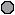

***** LINKS LINKS AND MORE LINKS *****.

DIRECT PC home page
A
Primer on writing HTML documents
The
Yanoff List
This link no longer in service
This link no longer in service
Lynx
home page
This link no longer in service
Mosaic
What's New on the Web
Searchable
Meta-Index of WWW resources
I-PHONE, STILL THE BEST!
Cal-Trans Traffic Map of Los Angeles California.
**CNN** NEWS & WEATHER
Weather, Weather, and more Weather
The QRZ CALLSIGN Data Base
FCC WEB Server
Fox Network News (Real Audio) LISTEN IN
Library of Congress
Fed GOV - EXECUTIVE BRANCH
Fed GOV - FBI
Link to the CIA'S home page.
SPACE LINK
Global Network Navigator [GNN]
NSSDC Photo Gallery
The Cu-Seeme Project
Declassified Satellite Photographs
Add your own URL to WWW data base?
List YOUR URL in the YELLOW PAGES.
YAHOO! Super search.
The NASA Newsroom.
NetWatch
APL STOCK quote server.
Reserved:
1
2
3
4
5
6
7
8
9
10
I'm Done here. Back to hank.com
hank@hank.com
By: Henry C. Armstrong III. (HANK.COM) - Copyright 1994 - 2002.
All rights reserved.
-->